Dragon Terminal
Dragon Terminal is the terminal made for ANDRAX Mobile, Dragon Terminal is based in NeoTerm.
ANDRAX has the most Advanced Terminal Emulator for Ethical Hacking and Penetration Testing on Android, our Dragon Terminal is dedicated for ANDRAX, Dragon Terminal allows a wide variety of customizations and implementations.
Others systems like: NetHunter, Parrot for Android, Termux, LinuxDeploy... uses really ugly, old and useless terminals!
Dragon Notification
Dragon Terminal uses a Advanced notification service system to prevent Android from close your running works (NetHunter can't do that)
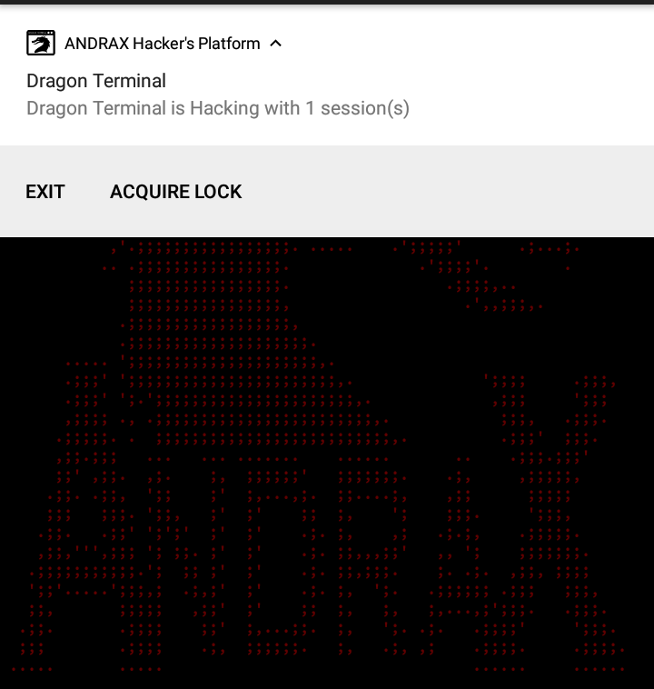
In Dragon Notification you have a option to "Acquire" a "Wake LOCK" FLAG that will say to Android don't fuck up with your terminal, so others applications never will stop yours running works and the CPU will be entire available to terminal spawned process.
Special Keys
Dragon Terminal has the most Advanced built-in Special Keys to optimize your works and the keys are customizables
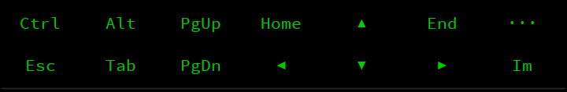
Special Keys in "extended" mode
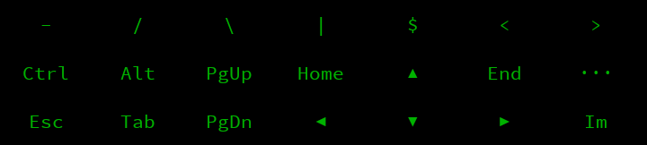
Advanced Multi Windows terminal
Dragon Terminal is the terminal who has the most Advanced Multi Window system, our multi windows is lightweight and beautiful at same time, NetHunter and Termux has really ugly and nonfunctional systems.
You can open several tools and tasks in Dragon Terminal Windows.

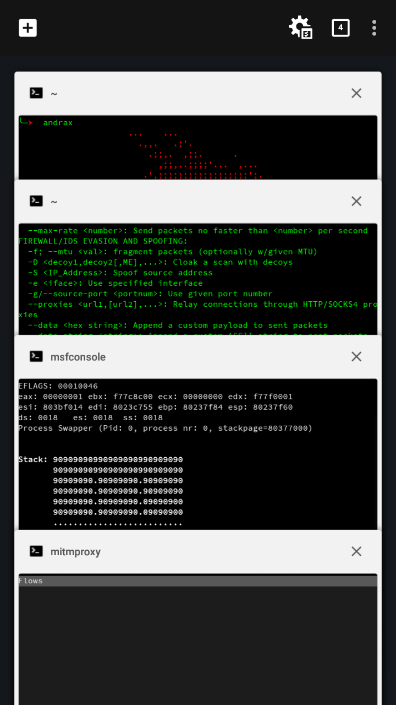
Recovery Shell
Dragon Terminal is built with a recovery shell to allow you directly access the Android Shell without pass trough ANDRAX shell.
This is useful when you need do some tasks in the Android context or test, fix something.
The Recovery Shell can be accessed by long pressing Dragon Terminal icon our using the Dragon Terminal menu.
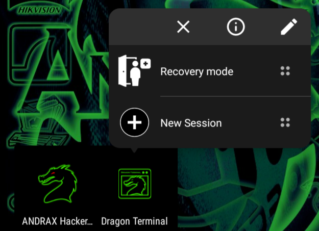
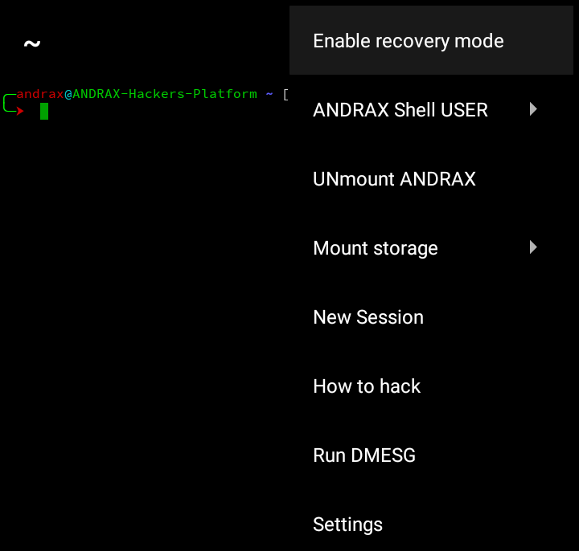

Change SHELL user
Our Dragon Terminal has the ability to change the shell "Login user", by default the login user for Dragon Terminal shell is "andrax" but if you are a monkey from Offensive Security who don't know use another user than root, you are able to enable root login by default on Dragon Terminal with the option: "ANDRAX Shell USER"
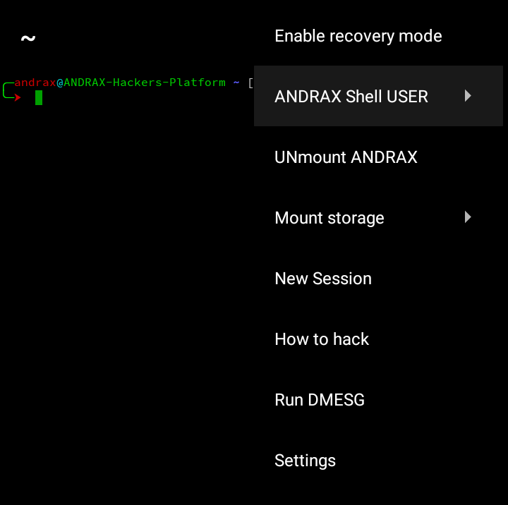
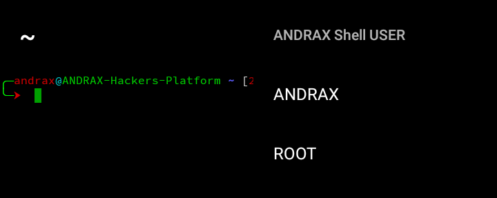
Now every time that you open a new window or the terminal the selected user will be used!
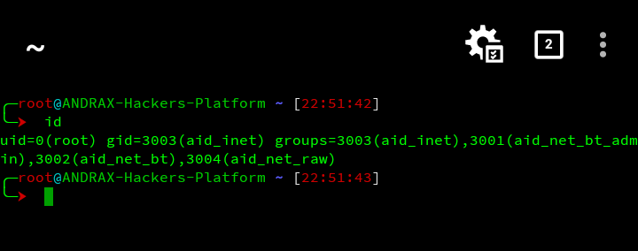
Insecure Action!
Offensive Security and Kali dumbs created a wrong vision that you need run things as root but this is a so insecure action that you is supposed to never do!
Mount Storage
ANDRAX runs in a secure container mode that prevent things runs out to Android space, like everything else, the container is not impenetrable but offer a really good security layer!
Anyway, some dumbs (created by Offensive Security) want mount the Android storage space inside the ANDRAX container, this is a really insecure action but if you want enable it just use the Dragon Terminal "Mount storage" option.
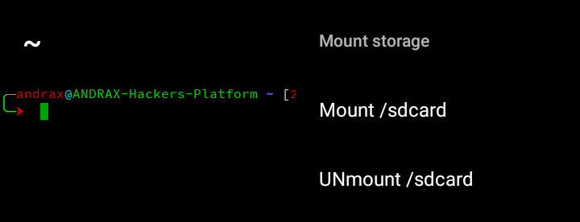
Now the content of the "/sdcard" (Android Internal Storage, don't be dumb!) is accessible inside ANDRAX container by /sdcard path
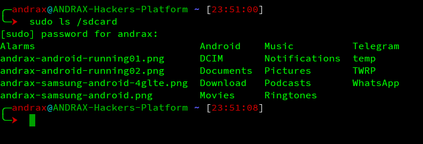
Initial Command
Dragon Terminal provides a way for users to define an initial command that will be executed whenever a new terminal window is created, this option is accessible in: Settings -> General Settings -> Initial Command
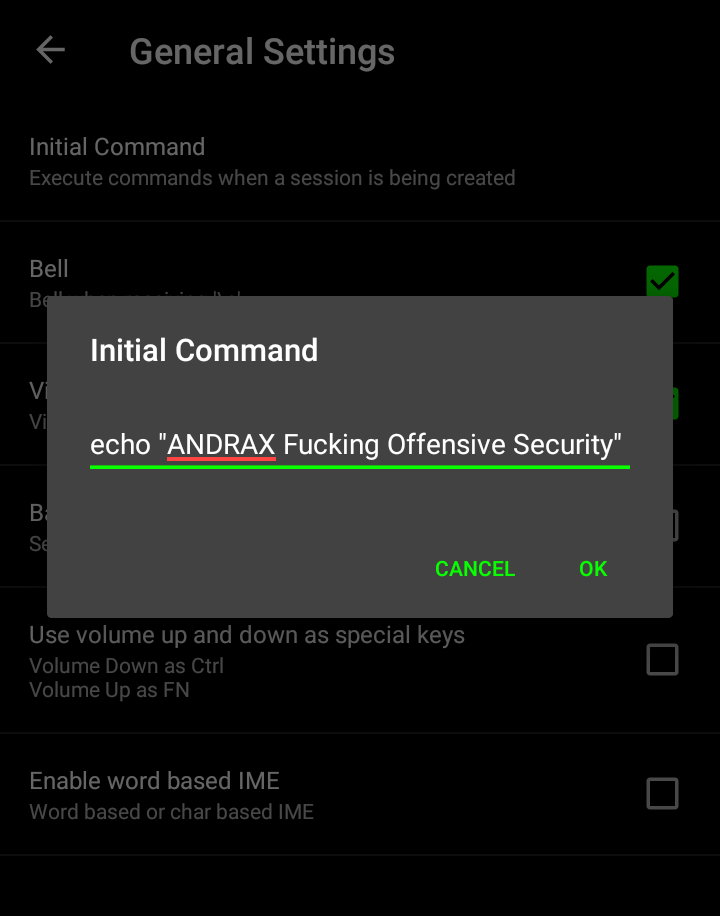
Now, every time that you open a new window the custom command will be added.
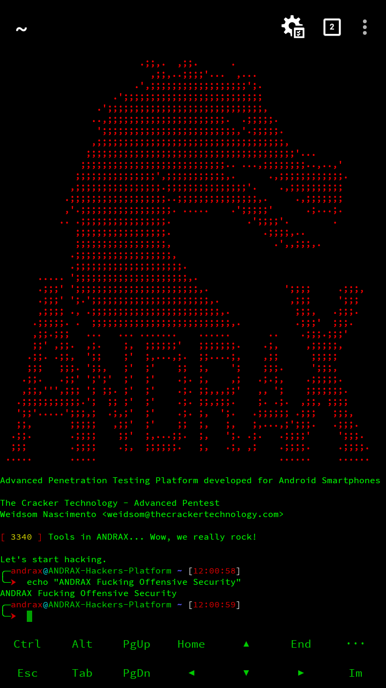
Bell
Dragon Terminal is a Advanced Terminal that have the most important Linux distributions terminal emulators capabilities, bell is one the function that others terminals not provide.
With this function when a error or a illegal action occur the terminal will alert you with a sound
This function is enabled by default but can be disabled in: Settings -> General Settings -> Bell
Vibrate
Vibrate is a option that is used to super complement the Bell function, when a error or a illegal action occur, this option is enabled by default Can be disabled in: Settings -> General Settings -> Bell
Full Screen
By default Dragon Terminal is launched in Full Screen mode to preserve more space to draw the lines and allow the user run tools in the more big area as possible, this feature can be disabled by default in: Settings -> UI Settings -> Full Screen
If disabled you will see the "Status bar" with notifications and others type of trash every in top of Dragon Terminal
Hide Toolbar
This option allow Dragon Terminal hide the toolbar every time that soft keyboard is in screen, this allow you type and see to window with the maximum size as possible
Can be disabled in: Settings -> UI Settings -> Hide Toolbar
Toolbar auto hide in Full Screen mode!
The Toolbar will be hide in Fullscreen mode even if Hide Toolbar is disabled
Next tab animation
Change the positional animation when a tab window is closed, the default is switch to the previous tab but you can enable this option to change to the next one (if exist). Can be enabled in: Settings -> UI Settings -> Next tab animation
Show extra keys
This option allow Dragon Terminal draw the Special Keys that helps in the use of tools that need some keys like; arrows, Ctrl, Alt, Tab, Esc, PageUp, PageDown, Home, End...
Is a extremely useful function (That lacks in other "platforms") but if you don't want use this, can be disabled in: Settings -> UI Settings -> Show Extra Keys
If disabled every new window tab will be opened without the Special Keys, the previous windows will remain with it enabled until be closed.
Custom font types
Dragon Terminal allow you to change the terminal font type, you can use one of the defined font type or use a custom .ttf file
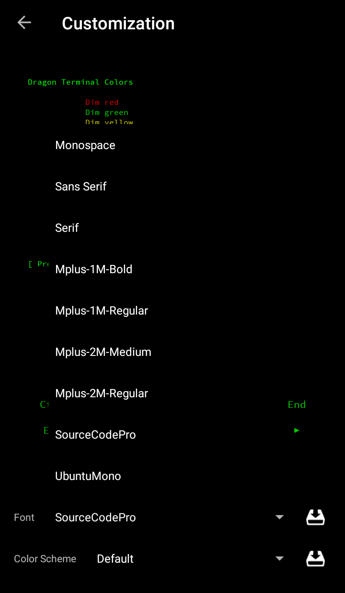
Source Code Pro by Default!
Dragon Terminal use the Source Code Pro font type by default
Color Scheme
The Color Scheme of Dragon Terminal is fully customizable, you can use our predefined color schemes or create your new color scheme from scratch or using a template
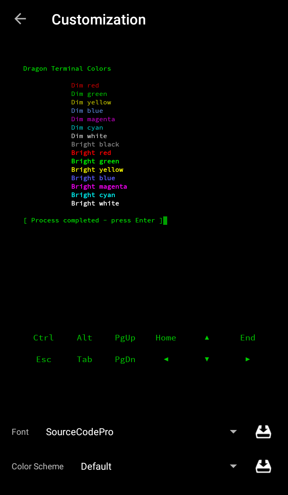
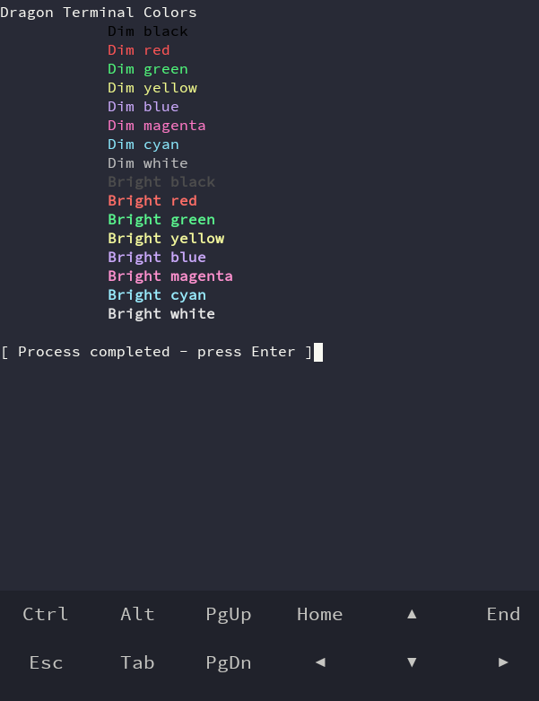
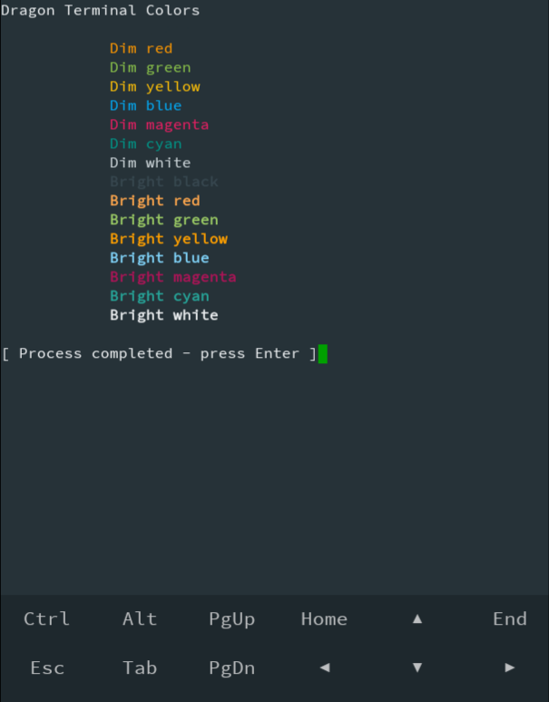
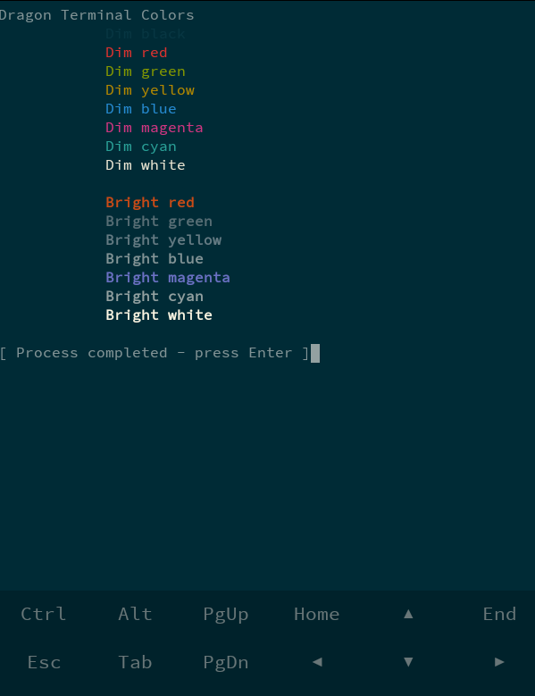
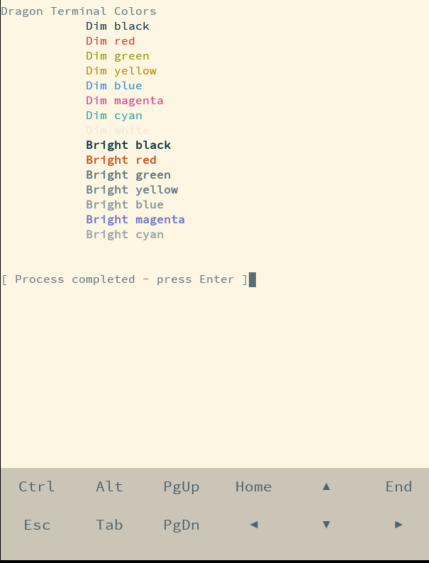

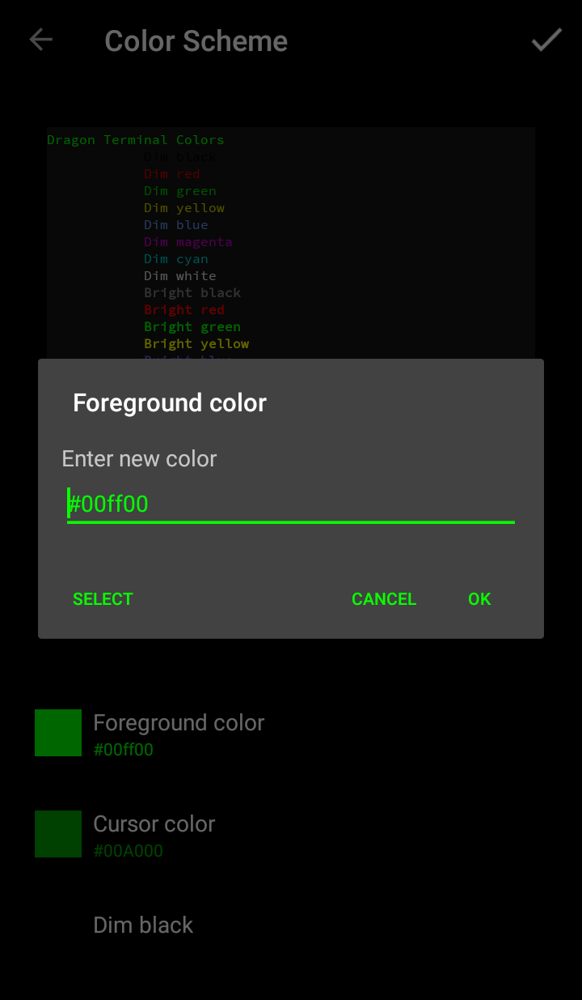
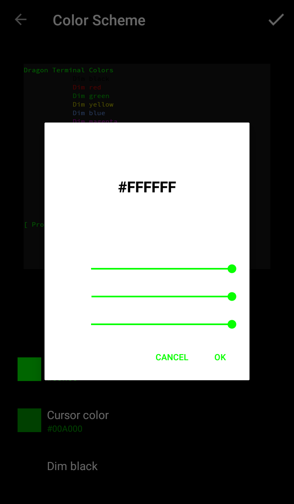
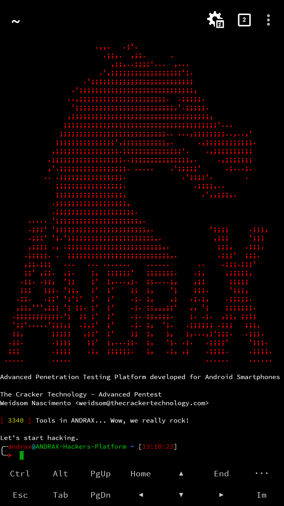
Foreground affect Special Keys!
The Special Keys colors is linked with Foreground color so if you change the foreground color to "red" the Special Keys will be red too!
ZSH SHELL
unlike other decadent platforms terminals like: Kali, NetHunter, Termux, Parrot... that use old shells line "bash" and sh, ANDRAX use ZSH in Dragon Terminal. ZSH is the most advanced shell for productive work!
The best option for Advanced Ethical Hacking and Penetration Testing!
Fully optimized with plugins and customizations, thanks to oh-my-zsh.
Custom themes
Oh-My-ZSH implementation allow us use a big variety of themes for our shell that make ANDRAX looks the way that you want
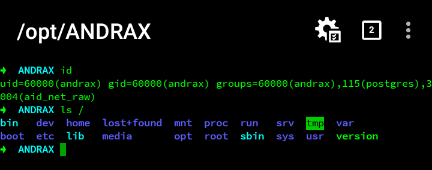
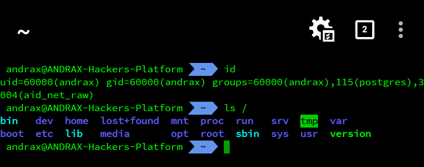
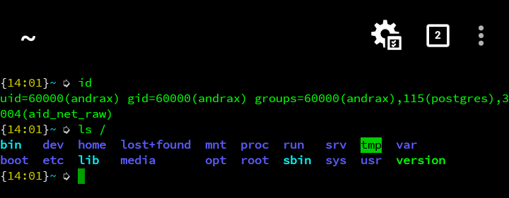
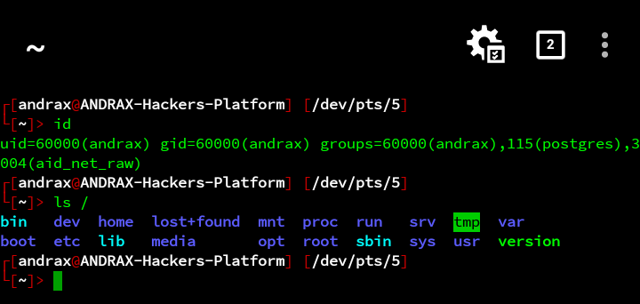
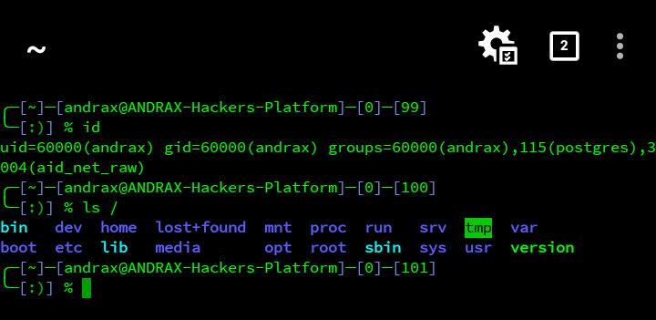
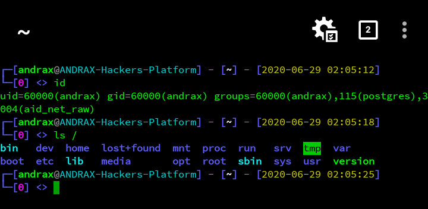
Custom GNZH!
By default the ZSH Shell of ANDRAX uses a custom version of the "gnzh" theme
Auto complete
The ANDRAX ZSH Shell is equiped with a Advanced Auto Complete to improve your works!
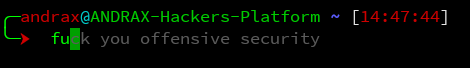
Stop using shited platforms, join the community of the most Advanced Ethical Hacking and Penetration Testing platform right now!
Learn Ethical Hacking
If you want to become a professional, join our Advanced Ethical Hacking Training: JOIN NOW!